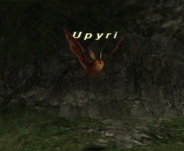

Level 75 reference · Zenith rules
|
Job: Notorious Monster |
 |

|
Zone |
Level |
Drops |
Steal |
Spawns |
Notes |
|
1 |
A, L | ||||
|
HP = Detects Low HP; M = Detects Magic; Sc = Follows by Scent; T(S) = True-sight; T(H) = True-hearing JA = Detects job abilities; WS = Detects weaponskills; Z(D) = Asleep in Daytime; Z(N) = Asleep at Nighttime | |||||
Notes:
- Spawns around E-7 to F-8 approximately every 21-24 hours; it does not need to be night, Vana'diel time, for it to spawn.
- During the day: Soloable at Lv.60 with no problem. I went in as 60 THF/BLM and took it down without going under half HP.
- During the night: Soloable at Lv.75, but very difficult. Even a Lv.75 THF with full evasion gear will have trouble soloing Upyri, as it will have increased accuracy and attack. (Was hitting for 150+ per hit and about 40% of the time.)
- Drain and Bloody Bolts will have no effect, and other dark magic will be very weak.
- Special Attacks: Hits harder at night than during the day. Attacks seemed to peak at around 1:00 AM Vana'diel time.
- Can use special ability Soul Accretion, which will drain some number of status effects.
- Rumoured to only drop the Vampire Earring at night
Adapted from Eden Wiki: Upyri · Contributors and history · CC BY-SA 4.0. Revision 45374. Layout, links and optional background text adapted for Zenith.